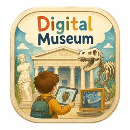

点开每座馆，画面上的圆点是可以走进的展线。绘本化探索人文历史。
每馆 1 页概览与 10 页展品、专题，沿树形目录走进文物的故事
绘本数字博物馆
向左或向上滑动进入下一页，向右或向下滑动回到上一页。
随知乎账号保存，仅你自己可见。
仅你自己可见，不会发布到知乎。保存后可在其他设备继续编辑。
0 / 2000
登录后可收藏展品、保存私人观展笔记，并在不同设备间同步。你也可以不登录，直接浏览全部展馆。
将前往知乎确认授权。本应用已申请邮箱、手机和公开内容权限，实际授权以知乎页面为准；本网站使用基本资料建立登录状态，并将你在本站保存的收藏、笔记关联至账号。邮箱和手机仅保留脱敏值，不读取你的知乎创作内容。
退出仅结束本网站的登录会话。